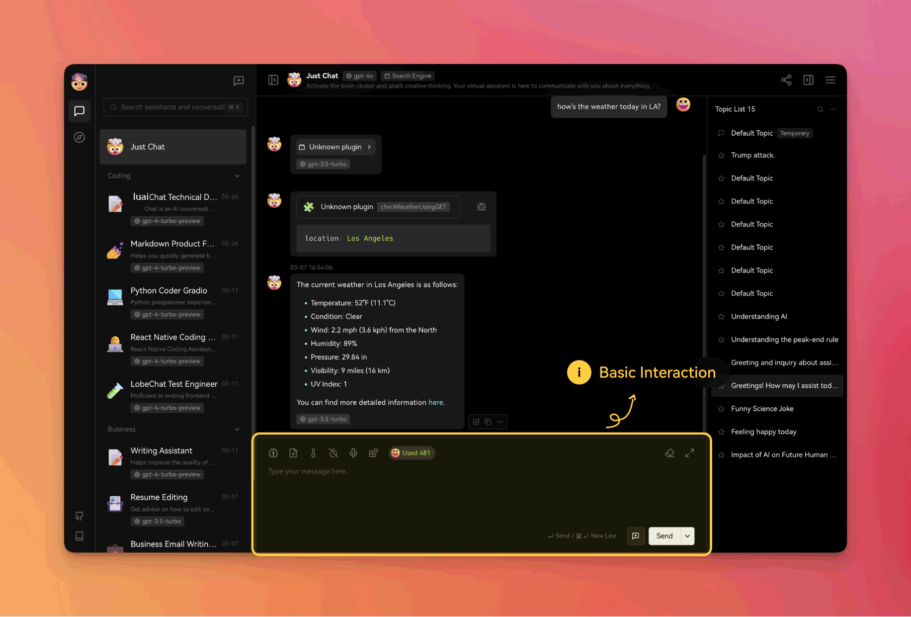
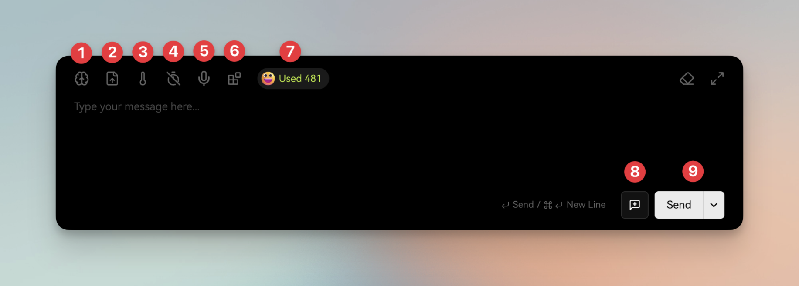
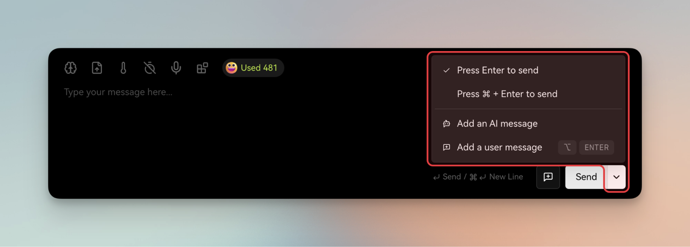

使用指南

通常情况下，与大型语言模型 (LLMs) 的基本交互可以通过此区域（如上图）提供的基础功能进行。
基本功能说明

- 模型选择：选择当前对话所使用的大型语言模型 (LLM)。模型的设置详见模型服务商。
- 文件 / 图片上传：当所选模型支持文件或图片识别功能时，用户可以在与模型的对话中上传文件或图片。
- 温度设置：调节模型输出的随机性程度。数值越高，输出结果越随机。详细说明请参考大语言模型指南。
- 历史记录设置：设定本次对话中模型需要记忆的聊天记录数量。历史记录越长，模型能够记忆的对话内容越多，但同时也会消耗更多的上下文 token。
- 语音输入：点击该按钮后，可以将语音转换为文字输入。有关详细信息，请参考语音文字转换。
- 插件设置：选择本次对话中需要启用的插件。有关详细信息，请参考插件使用。
- Token 用量：显示本次对话的上下文长度以及 Token 消耗情况。
- 新建话题：结束当前对话并开启一个新的对话主题。有关详细信息，请参考话题使用。
- 发送按钮：将当前输入内容发送至模型。下拉菜单提供额外的发送操作选项。

- 发送快捷键：设置使用 Enter 键或 ⌘ + Enter 键发送消息和换行的快捷方式。
- - 添加一条 AI 消息：在对话上下文中手动添加并编辑一条由 AI 角色输入的消息，该操作不会触发模型响应。
- - 添加一条用户消息：将当前输入内容作为用户角色输入的消息添加到对话上下文中，该操作不会触发模型响应。